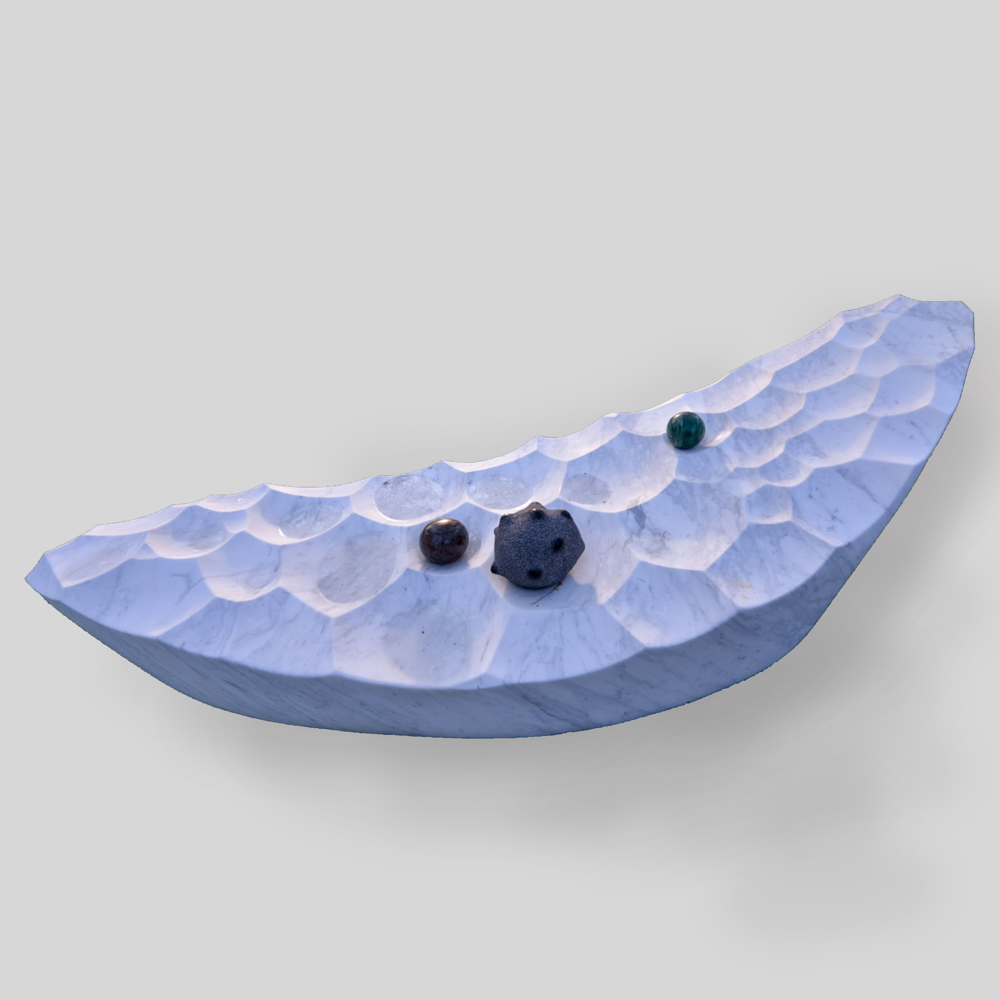

Image Net
All About the Moon
The Moon is a beautiful mystery, it has captivated the attention of everyone at some point. The Moon is an ancient symbol, it has shaped how we track and understand time, it rises every day bringing in the night, it controls the tides and is believed to affect our energetic fields. It represents strong powerful feminine energy. The Moon signifies wisdom, illusion, intuition and spiritual connection. The Moon cycle connect with birth, death and reincarnation, like the cycle of a seed: it grows up into a flower, it blooms and then it dies.
We are all capable of attuning with the Moons energies and activating our inner power. The lunar cycle is made up of different stages.
Becoming knowledgeable about the Moons energies is the first step along this path and learning how these powerful energies can be harnessed within your life. We can use knowledge about the Moon’s cycle to reflect inwards at ourselves and our own needs. Each of the lunar states mirror a different aspects of a spiritual path which is ongoing with multiple repeats and ongoing learning.
Each of the Moon Cycles looks different, it has it’s own unique shape and can easily be spotted. Each of these cycles carries with it it’s own spiritual meaning and this can be used to help us flow with the ever changing energies. The Moon takes approx 28 days to orbit the Earth and this is how we see a full cycle roughly every Month.

Lindy Lee, Listening to the Moon, 2018.

China, Dish with Blossoming Plum and Crescent Moon, mid- to late 15th century.

Carolingian, Roundel with a Personification of the Moon, ca. 860–890.

Lindy Lee, Listening to the Moon, 2018.

Jina Lee, A Gift from the Ocean.

KATSU, Facial Recognition Just Released from Jail, 2015.

Isghoul, Planting Pot.

European Space Agency, Oxygen and Metal from Lunar Regolith.

China, Round Ornament, 206 BC - AD 220.

Morgan Jones, The Sun Also Rises.

Lindy Lee, Unnameable, 2017.

Doulton Manufactory, Moon Flask, 1878-82.

Bayberries Studio, Laser Cut Unfinished Wood Cutout.

Worcester factory, Miniature moon flask with fretwork center, 1880.

Sean O’Connell, forced, 2015.

Susie Ganch, Untitled, 2010.

Danai Kotsaki, Between, 2017.

Noah Birch, On Balance.

Koichi Ishino, In the Grey of Daybreak.

Tetsuro Yamasaki, Circle – Door to the Future.

Mimi Martini, Full.

Cave Urban, Transience.

Paul Bacon, Cloud Drawn.

Stuart Caie, Budapest’ 8th District Apartment.

DSA Architects International / Heerim Architects & Planners Co. Ltd., The Crescent Moon, 2017-2020.

R.M.Gomboc, Time and Motion.

Flickr, Chasing the Light.

Oliver, Half Moon Spiral Stairs.

Flickr, Unknown.

Neal Spence, Lroc - Crater Detail.

Rein Nomm, Melt Down.

Katie Griesar, Eclipse 1.

ROSAT, X-ray Image of the Moon, 1990.

Kevin Dooley, Crescent Fractal.

Lindy Lee, The Silence of Painters, 1989.